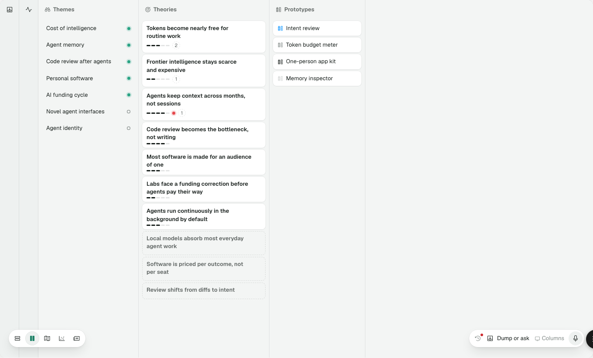
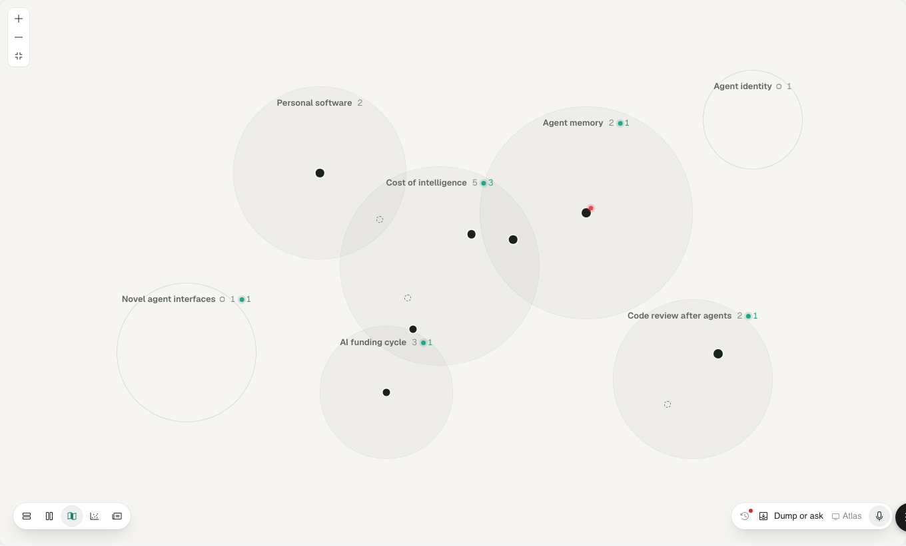
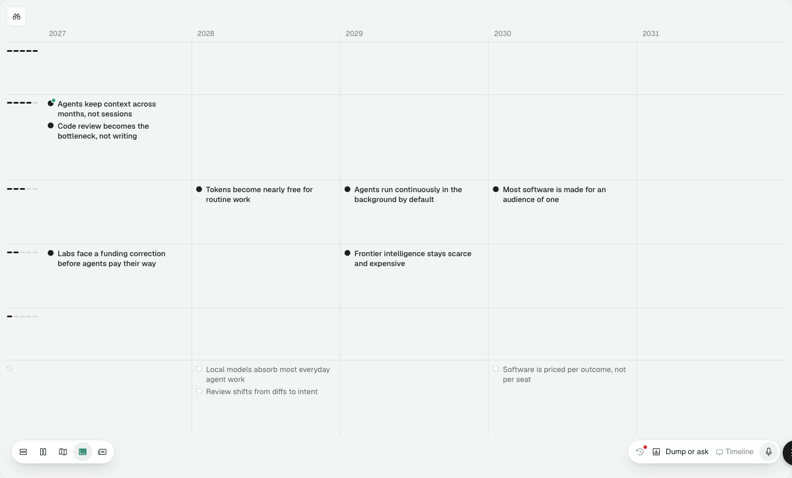

Proposed, 4 Nov 2026. Maggie: "I want Columns, Map and Atlas to stay as they are." So this is a restyle and detail fix, not a restructure. Each view keeps today's layout, navigation and docked pane exactly; only values change, and every value comes from the decided foundations: colour D, Regular spacing, type scale B, icons 16 and 14 with tiles, surfaces and tiers, and the 05 controls.
Every stage is live: click a theme, theory, territory or timeline item and the pane slides in; Esc, X or empty canvas closes it. The view switcher inside a stage switches views. Pane contents, object cards and rows, and the Dump or ask pill are placeholders (06 Objects and 07 Rungs design them); approving a view here approves only the view.
The app's three views (app/web/src/ui/; jig/src/homes/ holds near-copies) against RULES 00–05.
| View | What's there | Where |
|---|---|---|
| All three | View switcher is a 40 bar with 32 buttons, radius 20, ink 3 icons, press 0.94 (rule: 32 bar, 28 segments, radius 14, ink 2, 0.98) | app-shell.css:31–34 |
| Pane pads 40 / 48 (Columns, Atlas) and 40 / 36 (Timeline); rule: 20 / 24. Close sits 10 in, off the content edge | app-shell.css:26, :13; timeline2.css:9–10 | |
| Pane docks on a 500ms spring with bounce; contents cross-fade 140ms (rule: spring 380, fades 160) | app-shell.tsx:31, :261 | |
| Three dim values for "not related": 0.32, 0.18, 0.25 / 0.3 / 0.2 | homes.css:299; timeline2.css:62, :111–120 | |
| Columns | Column head 44 high, padded 0 6 0 14; theory column 300 (rule --list-w 296) | homes.css:280; columns2.tsx:22 |
| Theory cards 4 apart, radius 8, inset 8 / 10 (rule: 8 apart, radius 7, inset 12) | homes.css:293–294, :300 | |
Open card sinks (sunk fill + selection shadow, both !important); rule: selected raises (--sel) | homes.css:298 | |
| Rails 44 wide, icons ink 3, no tile; related counts are ink-filled 11 / 600 badges | homes.css:318, :322 | |
| "More above/below" pill: 20 high, 11 / 600 on ink, press 0.94; transitions 200, 150, 120, 100ms | homes.css:288–294 | |
| Atlas | Own ground rgb(246 245 241) instead of the ground token | atlas2.css:2 |
| Disc size encodes nothing: Personal software (27 signals) is drawn smaller than Cost of intelligence (23); the count beside a name doesn't match its pane | measured in /app | |
| Names collide: "AI funding cycle" sits on Frontier's pin inside Cost's disc; "Cost of intelligence" sits inside Personal software's | atlas2.tsx label at disc top + 16 | |
| Theory names hidden below zoom 1.6, so at rest pins can't be told apart | atlas2.tsx:54 | |
| Signal counts in ink 3 text; claim labels 12 / 600, line 16, radius 4, padding 2 / 5 (rule: list name 13 / 400) | atlas2.css:48, :38–39 | |
| Zoom box radius 8 with the card shadow; focus is a 1.5 ink 3 ring on map, discs and zoom (rule: the jade ring) | atlas2.css:95, :6, :15, :97 | |
| Timeline | Item labels 13 / 500, line 17, with a triple text-shadow halo; dot 10, gap 7 | timeline2.css:59, :65, :69 |
| Year axis 12 / 500 ink 3 (ink 3 is never text) | timeline2.css:50 | |
| Toolbar: separate 32 squares, radius 8, card shadow, press 0.96; filter uses Binoculars, the Theme glyph, as a control | timeline2.css:13–16 | |
| Plot inset 72 / 74 / 12 (off-scale); an empty lane is as tall as a full one | timeline2-fieldx.tsx:23 | |
Selected dot: its own ring and drop shadow, not --sel; focus offset 1 | timeline2.css:64, :68 |
--inset-canvas (16).--sh-float, radius 14, 2 padding, 28 icon buttons (radius 12) with tooltips. Every bar sits --inset-float (12) from the window edge: the view switcher bottom-left, zoom (Atlas) and tools (Timeline) top-left.--inset-pane (20 / 24). Close and full width sit in its 28 header row, glyphs on the content edge.--sel) on a surface: a card, theme row, territory label, map label or timeline item. A pin gets a ground gap and an ink ring instead. Related objects stay as they are. Unrelated objects recede with one treatment (choice 1). Esc, X or a click on empty canvas closes the pane.--list-w 296 at list inset, Prototypes 220, Dumps 250, Signals 290.sidebar-simple) shows on hover.--inset-row and stack with --gap-item.tree-structure) shows only while something is open and extends the lines to the whole chain.sidebar-simple, the Collapse sidebar glyph, because a folded column is a sidebar.
--sel) instead of sinking. Confidence is the 5-bar mark. No pending badge (suggestions show only in peek, full view and Briefing). The red challenge mark stays, pending 06: on theory cards, Atlas pins and timeline dots.

--sel). Follows lines are ink 2 elbows with heads, and rivals are a quiet ink 3 line.The same treatment in all three views: cards in Columns, discs and pins in Atlas, items in Timeline. Each stage has a theory open; switch views with its view switcher.
Today's approach, one value instead of five. Simple, but it borrows disabled's 40%, and faded cards look broken rather than quiet.
Unrelated cards lose their surface and shadow and sit on the ground; text drops to ink 2, dots to ink 3. Everything stays readable, and only what relates keeps its height.
Today the discs are sized by hand: Agent memory is the largest and Personal software looks smaller than Cost of intelligence despite having more signals. A size that looks like a quantity gets read as one.
Keeps the map exactly as Maggie knows it. Size means nothing, so the count beside each name does the work.
Radius grows with the square root of signals, so area reads true. The positions stay; a theory in two themes sits in the middle of their overlap. The map barely moves.
Today a pin is anonymous until you zoom past 1.6 or hover. Either way names never collide; a name with no clear place waits.
Today's behaviour. The map stays a map of themes; theories come forward when you look closer.
Every theory that has room is named at rest; the rest wait for hover. You can read the map without touching it, at the cost of more text.